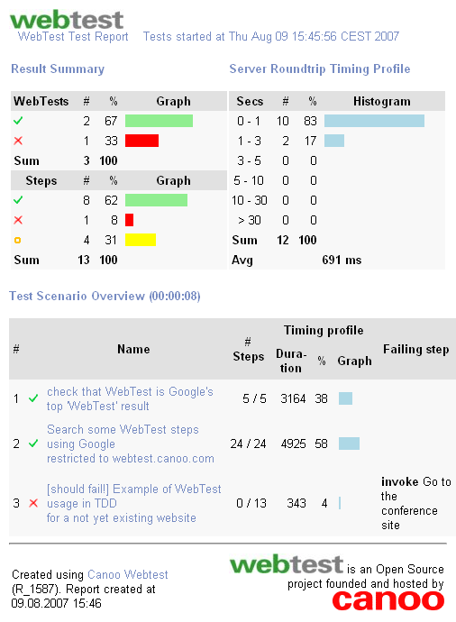

Installing WebTest
Prerequisites
- A platform that is able to run Java.
- An installed JDK version 6 or higher.
- Ant version 1.8.4 or newer (optional)
- WebTest's distribution contains the necessary part from ant 1.8.4 ready to run
- A tool to unzip.
Download
Download the latest build from: Downloads.
Extract it to a directory of your choice. We refer to that directory as your WebTest home.
Configure system path
The sub-directory lib/ of your WebTest home contains all the java libraries that make up WebTest's runtime. The sub-directory bin/ of your WebTest home contains shell scripts for Unix and Windows that start WebTest from lib/.
Set your path to run WebTest with one of the provided shell scripts:
- On Windows
- Add the bin/ directory of your WebTest home
to your path, by opening up the System Properties (WinKey + Pause), selecting the
Advanced
tab, and the
Environment Variables
button, then editing the
PATH
variable in the user variables.
For example:
"C:\Program Files\Webtest\bin";%PATH% - Unix-based Operating Systems
- Add the bin/ directory of your WebTest home
to your PATH.
For example:
setenv PATH ${PATH}:/usr/local/webtest/bin in .login (tcsh)
or
export PATH=${PATH}:/usr/local/webtest/bin in .bashrc (bash).
Create a new WebTest project
WebTest contains a utility script able to create a new project with some examples ready to run.
Open a new shell and type:
(For shell users, the command name is webtest.sh instead of webtest)
You will be asked for the name of the new project to create. If you just hit [enter] the default name myWebTestProject will be used;
Buildfile: WebTest\webtest.xml
wt.init:
wt.createProject:
[input] Enter your WebTest project name: [myWebTestProject]
[echo]
[echo] Your WebTest project >myWebTestProject< has been successfully created with some demo
[echo] tests to get started.
[echo] You can now just go to >c:\myWebTestProject< and run ant.
[echo]
BUILD SUCCESSFUL
Total time: 7 seconds
Run the demo tests
Your newly created project contains some web tests ready to run that you can use as templates. You can run them just by moving to the project directory and calling:
(if you're behind a proxy, edit the build.xml file to configure the proxy connection)
You should see some activity in the shell window and after a few seconds something like:
wt.openResultFile:
[echo] Opening result file C:\myWebTestProject\results\webtestResults.html with cmd
wt.full:
BUILD SUCCESSFUL
Total time: 16 seconds
and an html report file like this one should be displayed in your favorite browser: 